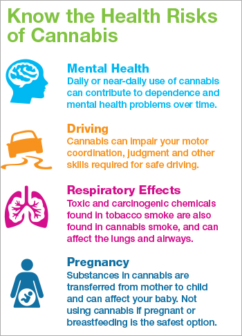
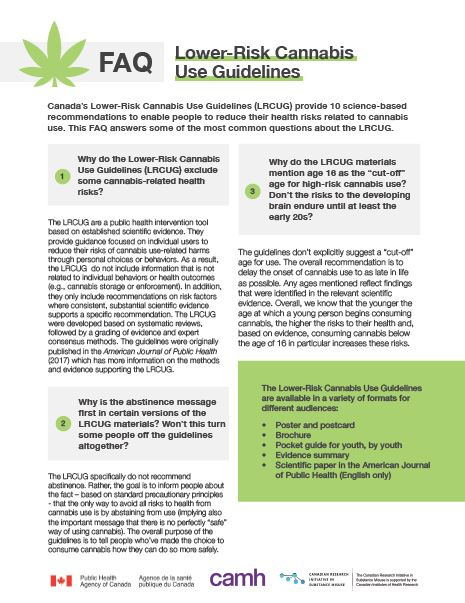

Excessive or irresponsible cannabis use can lead to health problems such as respiratory issues (when smoked), decreased motivation, and impaired memory and concentration. Some studies suggest a correlation between heavy cannabis use and an increased risk of mental health disorders, including anxiety, depression, and in severe cases, psychosis. Additionally, cannabis can impair motor skills and reaction times, raising concerns about public safety, particularly when driving under the influence.
Despite these risks, proponents of cannabis argue that, like alcohol, it can be used responsibly by adults. When regulated properly, cannabis can be consumed safely through non-smoking methods, such as edibles or vaporizers, reducing respiratory risks. Education and regulation can help minimize public safety concerns, and responsible use can offer a balance between benefits and risks.
